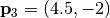

User’s guide: SP¶
A typical command to run the sensor placement algorithm looks as follows:
$ SP.py --config_file /path/to/config/file/MyConfig.yaml
As a command line option we specify the path and name of a configuration file. This configuration file contains all the settings that you may wish to specify. The syntax of this configuration file is described below.
Configuration file¶
The configuration file to specify important array design parameters. The configuration file is written in YAML. The YAML syntax is simple and it is sufficient to look at the commented example below. More details about certain parameters are provided below.
#######################
# Mandatory parameters
#######################
Nsensors: 15 # The number of sensors available
Kmin: 0.1 # minimization area, not resolution limits
Kmax: 0.4
#######################
# Optional parameters
#######################
# OUTPUT: OutputDir # Folder where output files will be saved. Default is current folder <.>
# MaximumAperture: 10 # Largest possible aperture of optimized array. Default is computed from Kmin
# N: 200 # Desired number of possible sensor positions. Default is <>
# M: 80 # Desired number of frequency samples. Default is <>
### Possible sensor positions
# Grid: 'rings_uniform' # Locations on circular rings. This is the default grid.
# Grid: 'cartesian' # Locations on a Cartesian grid
# Grid: 'hexagonal' # Locations on a Hexagonal grid
# Grid: 'random' # Random locations
# Grid: 'file' # Locations specified in an external file
# GridFile: 'InputGrid.csv' # File with possible locations
# EnforceSensor: [[0,0,1], [-2.4,3.4,1], [-2.4,3.4,0]] # Force the presence of a sensor at given positions. Default is uncostrained.
#######################
# Solver parameters
#######################
TimeLimit: 3600.0 #
The example configuration file shown above is available here.
Warning
The configuration file is case sensitive.
Warning
The syntax of the configration files is not checked properly. Many mistakes will go unoticed eg: K_min or kmin instead of Kmin. Please check info printed at start up or the log file to make sure the configration file is read correctly.
Number of sensors¶
The parameter Nsensors specifies the number of sensors of the array. It is denoted with  in the equations.
in the equations.
Kmin and Kmax¶
The parameters Kmin and Kmax specify the region of the array response where the sidelobes are reduced. Their value must be chosen in agreement with the wavenumbers of the seismic wavefield (i.e., with the spatial bandwidth). A discussion on how to choose their value appropriately is found in TODO
Observe that a large  makes the array design problem harder. See TODO for an example.
makes the array design problem harder. See TODO for an example.
Increasing M will increase the number of linear inequalities in the optimization problem.
{kind=link}
Array response of an optimized array. The M blue dots depict the points used in the computation. The annulus defined by Kmin and Kmax is depicted.¶
Possible sensor positions¶
The sensor placement algorithm finds good positions of the among  possible sensor positions.
possible sensor positions.
The choice of the geometry of the possible sensor positions and the number of possible sensor positions affect the results. Some choices may be more suitable than others. Some choices may make the optimization problem really hard and the algorithm will not find a good array.
The parameter Grid allows us to choose among different possible arrangements of the possible sensor positions. The parameter N specifies the number of the possible sensor positions. The parameter MaximumAperture specifies the maximum array aperture in meters.
Increasing N will make the possible sensor positions more dense. But the optimization problem a lot harder.
Tip
It is possible to load from file an arbitrary set of possible sensor positions. This is especially useful in presence of physical obstructions. Set Grid: 'file' and GridFile: 'CustomGrid.csv'.
|
|
|
|
{kind=link}
{kind=link}
{kind=link}
{kind=link}
Additional constraints¶
Enforcing sensor position¶
It is possible to enforce the presence or the absence of a sensor at a specific position. Use the optional parameter EnforceSensor. The syntax is EnforceSensor: [[x1,y1,0/1], [x2,y2,0/1], [x3,y3,0/1],...].
The enforced position must be within the possible sensor positions. If not, the closest sensor position will be chosen.
For example, we enforce the presence of three sensors at positions , , 
EnforceSensor : [[0,0,1], [-1,1,1], [4.5,-2,1]]
To prevent the algorithm placing a sensor at the origin we use
EnforceSensor : [[0,0,0]]
Observe the double [[ ]] even when specifying a constraint on a single sensor position.
Constrain MOI¶
TODO Enforce MOI
Solver options¶
The search for the optimal array may last a very long time. It is wise to terminate the optimization after a certain amount of time. The best array found in the given time is saved. Use TimeLimit: 3600 to set a maximum time in seconds.
Optimization¶
After reading the configuration file the software will start solving the opzimization problem and seek for an optimized array.
The optimization may run for a very long time if you allow to do so.
Output files¶
The output is saved to CSV files in the directory specified in the configuration file by OUTPUT. The output files can be opened with a spreadsheet or with a simple text editor.
Comment lines begin with #. On each row columns are separated by a tabulation character \t.
Each column of the CSV file is described in the following table.
File name |
Description |
|---|---|
Optimized_ArrayLayout.csv |
Contains the coordinates of the optimized array
|
PossiblePositions.csv |
Contains the coordinates of the possible positions used.
This may be edited and reused as input in another optimization.
|
Optimized_Info.yaml |
A YAMl file with some information about the solution.
|
SP.log |
Main log file.
|
SP_gurobi.log |
Log file with details about the numerical optimization.
|
plots/ |
Folder with some plots.
|